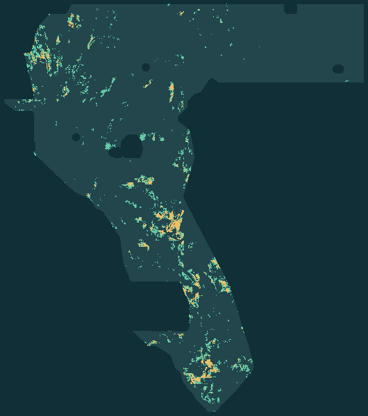

A new GeoTIFF.
A clear stop decision.
Geophysics meets surface evidence. We generated a new disagreement prediction, tested it, and kept the failed gates visible.
The local format check passes. The legacy holdout is not strict-valid, and the scientific comparison and parallel-lane gate do not pass. No competition slot was used. NO CERTIFIED LEADERBOARD GAIN.
gems52-ctd5-cover-disagreement-20261008-a24c35d1-b58bae0f0e.tif
83,917 bytes · SHA-256 a6e6e44aebaf057989e254bd5ce3729e5a94836c0e5687a95e91e3fc8a40c686
knowledge/27_r5_findings.md,
reasoning for all 4,164 A-only
candidates.What the holdout actually says
Read the method & limitations →HOLDOUT-DTI — exploratory legacy-v1, NOT strict holdout-valid · gems52-pooled-hide-v1 · 53,186 withheld positives · pooled terms · 300 m triangular kernel · α 0.2 / β 0.8. 95% CI: paired 20 km cluster bootstrap. Not an organizer score.
Validation failure: Legacy evaluation halos depended on withheld fault tails, revealing location to the placement domain. Shared splitter v2 is corrected; no post-stop refit or revised score exists. Scope correction. Budget-comparison failure: fold 1 emitted only 2,041 of 3,058 requested candidate dots; controls filled their budgets. These are descriptive results, not a valid matched-budget promotion test. The final TIFF contains 12,000 dots.
| Procedure | HOLDOUT-DTI | 95% CI |
|---|---|---|
| Surface-only control | 0.106749 | [0.089076, 0.124951] |
| Disagreement before transfer | 0.021217 | [0.014514, 0.028823] |
| Disagreement after one exchange | 0.018848 | [0.012421, 0.026020] |
No inherited prediction core
0 copied priorsPrior rasters enter only the audit. The new file is not a renamed prior, not a retained “credited core,” and not the union of the two views.
The lane rule stopped the run
541 rasters checkedA survey-wide lattice is within three pixels of every eligible cell. The literal overlap gate fails even though no decoded prediction is identical.
Geology for every A-only segment
1,521 review recordsMeasured context, a named non-fault mimic and a falsifier—not invented field observations. All 12,000 emitted cells have a record too.
H33 support comparison.
No score cause is established.
Local bytes show that the H33-labelled bitmap removed 2,545 cells from its immediate parent and added none. This is a support-set fact only: hidden new-fault truth and score impact are unknown.
The saved PUBLIC-LEADERBOARD observation places extradr19 at 0.2778/rank 17 (top row 0.3774); it contains no TIFF hash or receipt. The H33 file/score association is OWNER-REPORTED, not ORGANIZER-CONFIRMED. Official staff says new-fault truth may occur within 300 m of known traces, so distance alone does not establish zero credit. The byte comparison does not explain a score change.
The exact evidence and metric argument →
Actual raster preview, north up. Enlarged display pixels; not a verified fault or geothermal-resource map.
Concurrent closure: the later H60 artifact was checked separately against unchanged CTD5 predictions. Initial closure: 542 files / 361 patterns; a second concurrent H60 then brought the total to 543 files / 362 patterns. The original duplicate STOP remains. First supplemental audit · Second supplemental audit. The inherited H60 pointer is unapproved, not selected by this session. Preserved H60 archive. A third, independent H60 round is at H60C — preregistered two-view co-training on forensically attributed credit, artifact gems52-h60c-core25517px-arm9668px.tif, download.
A fourth, independent H60-family round is at H60D — co-training with disagreement as the discovery signal, artifact gems52-h60d-dis_contrast-arm37654px.tif, download. NEGATIVE RESULT — download for review only; do not spend a weekly slot.
Preserved research archives — do not upload
None of these historical files is current approval. H58: gems52-h58-coldgeo-consensus-22px-a55b0dee38-research.tif, SHA-256 130c242e33aef398c44b22cd…; research only, not approved to submit. H58 negative-result audit.
gems57-h57-credit-core25517-plus-novel8000-33517px-zeros.tif is the unapproved H57 alternate; historical audit. H55-EDGE negative-result archive · Former H59 landing page, historical claims superseded.
Concurrent H60 co-training result: audit · research-only TIFF. The separate H60 triple-convergence archive is also preserved. Neither is approval.